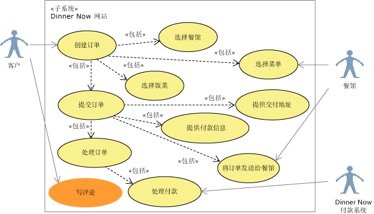
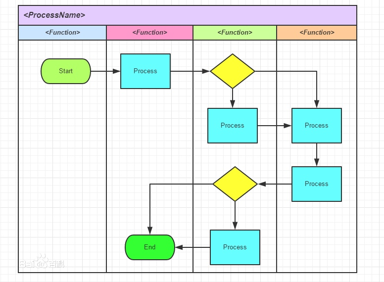
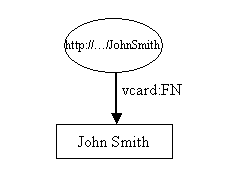
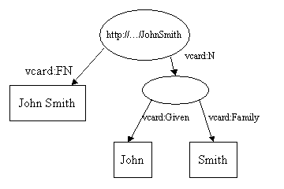
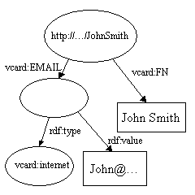

软件工程基础
一、软件过程
软件过程的概念
Software Process，也成为软件生存周期过程，是指软件生存周期内的一系列相关过程。
过程：活动的集合
活动：任务的集合
任务：要起到把输入加工成输出的作用
活动的执行可以是：
- 顺序的
- 迭代的（重复的）
- 并行的
- 嵌套的
- 有条件地引发的
经典软件过程模型的特点（瀑布模型、增量模型、演化模型、统一过程模型）
瀑布模型特点：
- 各个阶段的顺序性和依赖性
- 划分逻辑设计和物理设计，尽可能推迟程序的物理实现。
- 每个阶段必须完成规定的文档，对其中问题通过复审及早发现，及早解决。
优点：
- 可强迫开发人员采用规范的方法。
- 严格规定了每个阶段必须提交的文档。
- 要求每个阶段交出的所有产品都必须经过质量保证小组的仔细验证。
缺点：
- 用户需求不清是一个常见情况，瀑布模型不接受。
- 错误发现迟导致大量返工。
- 线性模型导致的开发进度缓慢。
增量模型
与瀑布模型相比，有以下优点：
1. 多个版本可以并行开发
2. 每个版本都是可运行的产品，每一个线性序列产生软件的一个可发布的增量，他必须是可运行的产品。
3. 需求在开发早起是明确的。
4. 需求不明确或者变更导致的返工风险更大。
演化模型（最广泛的模型）
自己总结：支持并行开发，增量式递交产品，加快了开发进度，通过迭代环节技术风险和系统集成风险，核心需求确定后即可开始开发，后续变更需求通过迭代演示及时收集改正，保证开发出来的系统真正解决用户的问题。缺点是复杂，迭代的规划和控制是难点，也是成功的关键。
统一过程模型
UP
包括以下三大组成部分：
- 一整套成功开发软件的原理和最佳实践。
- 过程模型和相关的内容模板库。
- 过程定义工具。
把软件开发生命周期分为：
- 先启，所有项目干系人就目标达成共识。目标里程碑。
- 精化，建立软件架构基线，解决技术风险，以便为软件的详细设计和实现提供稳定的基础。架构里程碑。
- 构建，基于已建立基线的架构完成系统开发。初始能力里程碑。
- 产品化，确保最终用户可以使用软件。发布里程碑。
每个阶段的结束就是一个业务决策里程碑（大里程碑）
过程评估与CMM/CMMI的基本概念
关于软件开发过程的问题：
* 所定义的软件过程是否适合本组织或本团队？
* 过程绩效如何？
* 软件过程能力成熟度为几级？
* 哪些过程域做的很好，哪些又有不足？
对以上为题的评估，主要有：
* CMM/CMMI
* ISO/IEC 15504
* ISO/IEC 20000
* Bootstrap
* Trillium
* 等
CMM/CMMi:
80年代中期，由美国联盟政府提出，要对软件承包商的软件开发能力进行评估。CMU/SEI与1987年研究发布了Capability Maturity Mode 也就是CMM。CMM在发展过程中衍生出一系列模型，包括：
- Software CMM SW-CMM 软件CMM
- System Engineering CMM SE-CMM 系统工程CMM
- Software Acquisition CMM SA-CMM 软件采购CMM
- Integrated Product Team CMM IPT-CMM 集成产品群组CMM
- People CMM P-CMM 人力资源CMM
为了减少采用多种成熟度模型引起不必要的冲突和混淆，解决模型间的细条问题，CMI/SEI在2002年研究发布了软件成熟度模型集成 Capability Matruity Model Integration 也就是CMMI
CMMI 是一个标准簇，它包括以下内容：
- CMMI for Development CMMI-DEV 开发模型
- CMMI for Service CMMI-SVC 服务模型
- CMMI for Acquisition CMMI-ACQ 采购模型
CMMI用两种表示法支持不同的改进方法：
- 组织成熟度方法（阶梯式模型），强调组织成熟度。
- 过程能力方法（连续式模型），强调单个过程域的能力。
CMMI 阶梯式模型将软件组织的成熟度分为：
1 初始级
2 已管理级
3 已定义级
4 定量管理级
5 持续优化级
进化途径为：
1. 有纪律的过程 2
2. 标准一致的过程 3
3. 可预测的过程 4
4. 不断改进的过程 5
CMMI 连续式模型将评估划分为4大块：
- 过程管理（组织）
- 项目管理（项目）
- 工程管理（开发）
- 支持 （服务）
敏捷宣言与敏捷过程的特点
四个核心价值观：
- 注重个人和交互胜于过程和工具。
- 注重可用的软件胜于事无巨细的文档。
- 注重客户协作胜于合同谈判。
- 注重随机应变胜于循规蹈矩（恪守计划）。
十二条基本原则：
- 最优先的目标是通过尽早地，持续地交付高价值的软件来满足客户需要。
- 即使到了开发的后期，也欢迎改变需求。
- 经常交付可以工作的软件，交付的间隔可以从几周到几个月，交付的时间间隔越短越好。
- 在整个项目开发期间，业务人员和开发人员必须每天在一起工作。
- 围绕被激励起来的的来构建项目。给他们提供所需要的环境和支持，并且信任他们能够完成工作。
- 在团队内部，最具有效果并且富有销路的传递信息的方法，就是面对面的交流。
- 可以工作的软件是进度的主要度量标准。
- 敏捷过程提倡可持续开发。出资人，开发人员和用户应该总是维持不变的节奏。
- 对卓越技术与良好设计的不断追求有助于提高敏捷性。
- 简单-尽可能减少工作量的艺术至关重要。
- 最好的架构、需求和设计都源自自我组织的团队。
- 每隔一定时间，团队都要总结如何更有效率，然后相应地调整自己的行为。
二、软件需求
软件需求的概念；
软件需求的概念
软件需求是
1. 用户解决问题或达到目标所需条件或权能（Capability）
2. 系统或系统部件要满足合同、标准、规范或其他正式规定文档所需具有的条件或权能。
3. 一种反应1、2所述条件或权能的文档说明。
软件需求包括功能性需求和非功能性需求，非功能性需求对设计和实现提出了限制，比如性能要求，质量标准或涉及限制等。
以上为百科定义
需求:系统必须符合的条件或能力。软件系统必须符合的条件或能力，一般用FURPS+模型定义。
- 功能性：Functionality。特性、功能和安全性。
- 易用性：Usability。用于衡量准备输入、操作盒理解产品输出所付出的努力。
- 可靠性：Reliability。可靠性是软件无故障执行一段时间的概率。
- 性能：Performanc。性能需求是在功能需求基础上规定的性能参数，包括速度、效率、可用性、准确性、吞吐量、响应时间、资源使用情况。
- 可支持性：Supportability。可支持性需求表明进行系统测试、安装、扩展、移植等工作时所需工作量的大小。
其中UPRS合称为非功能需求，或软件质量属性。+是一些补充的需求，比如：
- 设计约束：Design Constraints。规定或约束了系统的设计，通常任何不允许有一个以上设计选项的需求都可以认为是一个设计约束，例如必须采用某种算法，必须使用某种数据库。
- 实现需求：Implementation Requirements。规定了系统必须与之交互操作的外部软件或硬件，以及对这种交互操作所采用的格式、时间或其他因素的约束。
- 接口需求：Interface Requirements：规定了系统必须与之交互操作的外部软件或硬件，以及对这种交互操作所采用的格式，时间或其他因素的约束。
- 物理需求：Physical Requirements：规定了系统必须具备的物理特征，可用来代表硬件要求，如物理网络配置需求。
软件需求关注的是待开发的系统是什么，而不是如何去开发。
需求工程的基本过程
软件需求包括3个层次：
1. 项目干系人需求：Stakeholder Requests，既原始需求，是开发团队调研获得项目干系人对系统的要求。
2. 前景文档：Vision，既概要需求，用于记录关键的用户需要和系统特性。
3. 软件需求规约：Software Requirement Specification SRS，正式的详细软件需求。
需求工程的基本过程：
- 需求获取
- 需求分析
- 需求定义
- 需求验证
- 需求管理
需求获取包括：
- 项目前景文档
- 术语表
- 项目干系人需求
用例和场景建模及其UML表达
用例图
用来描述软件系统的上下文范围以及他提供的功能的概览视图。它从黑盒的角度，描述了谁（或什么）与系统交互，外部希望系统做些什么。

用例图的基本元素包括
- 执行者：是与系统交互的实体，可以是人，其他外接的硬件设备或系统。执行者位于子系统外，用人来表示。
- 用例：代表执行者希望系统为他们做什么，用椭圆表示，用例不仅仅是系统可以提供的功能，从执行者来看，用例必须是一个完整的活动流程，为使用者提供
价值。 - 关系：包括
执行者和用例间的关系、用例和用例间的关系和执行者与执行者之间的关系。执行者和用例间的关系只有一种，既关联，标识哪个执行者使用哪个用例。用例之间有三种关系：包含、扩展和泛化。执行者之间的关系只有一种：泛化。
活动图
用于刻画一个系统或子系统的工作流程，也可用于描述用例内部的事件流。
活动图的基本元素包括：
- 动作：Action。是行为的基本单元，一个活动可包含多个动作。动作用圆角矩形标识。
- 控制流：Control Flow。用来表示从一个动作到另一个动作的流的控制，用一条带箭头的直线表示。
- 控制节点：Control Node。用于协调动作的节点，他决定了活动图的流程。控制节点分为
初始节点，终止节点，判断节点，合并节点，分叉节点，汇合节点 - 对象节点：Object Node。是动作处理的额数据，用矩形表示。
控制节点包括：
- 初始节点：活动开始的节点，用实心圆标识。
- 终止节点：活动结束的节点，细分为活动终止和流终止。分别用带十字叉的元和带边框的实心圆表示。网上一般都是流终止，书上是活动终止。
- 分叉节点：并发流开始。
- 汇合节点：并发流结束。
- 判断节点：用菱形符号表示。一个判断节点可以有一个进入流和多个离去流。在每个离去流上防止一个布尔表达式，在进入这个分支时判断一次。在所有离去流中，器监护条件应该覆盖所有可能性（不然控制流可能会冻结），同事不应该重叠（否则控制流可能有二义性）。
- 合并节点：也用菱形符号表示，一个合并节点可以有多喝进入流和一个离去流。他可以将多个控制路径重新合并，就是说后边都一样了。离去流向的动作会被执行输入流动作数量的和次。
对象节点
是动作处理的数据，用举行表示。在某些情况下，看到活动中操作的对象会比较有用。但是在所有活动图中这样做会导致活动图变得复杂和臃肿。
分区和泳道
活动图中的元素可以用分区（Partition），泳道（Swimlane）来分组。分组的目的是说明具体活动的责任。
泳道
泳道可以是一个业务单位、部门、小组、执行者、系统、子系统、对象。每个泳道都可以被命名，表示负责者。
个人理解就是监护职能划分。

分区
好像和泳道是一回事。
时序图
状态机可以刻画专注于对象内部的行为。而时序图和通信图可以刻画关注与对象之间的协作。
时序图，又称为序列图、顺序图。它通过描述对象之间发送消息的时间顺序显示多个对象之间的动态合作。时序图用于跟踪同一个上下文环境中一个用例场景的执行，当执行一个场景时，时序图中的每条消息对应了一个类操作或状态机中引起转换的触发事件。

时序图以二维图的形式刻画对象间的动态交互。垂直维是时间(Time)，用于表示对象之间传送消息的时间顺序。水平维是角色(Role),每个角色有一个名称和一条生命线（Lifeline）。生命线代表整个交互过程中对象的生命期，用垂直虚线表示。生命线之间的箭头连线代表消息（Message）。当对象发送或接收消息时，生命线用双条实线表示。
消息分为3类：
- 同步消息，既操作调用，用带箭头实心线。
- 异步消息，带开放箭头实心线。
- 返回消息，带开放箭头的虚线。（书上写实线，但画的是虚线）
序列片段可以用来简化时序图，也可以用来表示时序图中的流程控制结构，它主要包括：
- 交互使用：Interaction Use 左上角ref
- 循环：Loop 左上角loop
- 条件：Conditional Fragment 左上角alt
- 并发：Parallel Fragment 左上角par
需求工程的基本过程；分层数据流模型；用例和场景建模及其UML表达（用例图、活动图、泳道图、顺序图）；数据模型建模及其UML表达（类图）；行为模型建模及其UML表达（状态机图）。
三、软件设计与构造
软件体系结构及体系结构风格的概念；设计模式的概念；模块化设计的基本思想及概念（抽象、分解、模块化、封装、信息隐藏、功能独立）；软件重构的概念；软件体系结构的UML建模（包图、类图、构件图、顺序图、部署图）；接口的概念；面向对象设计原则（开闭原则、Liskov替换原则、依赖转置原则、接口隔离原则）；内聚与耦合的概念、常见的内聚和耦合类型。
四、软件测试
软件测试及测试用例的概念；单元测试、集成测试、确认测试、系统测试、回归测试的概念；调试的概念、调试与测试的关系；测试覆盖度的概念；白盒测试、黑盒测试的概念；代码圈复杂度的计算方法；白盒测试中的基本路径测试方法；黑盒测试中的等价类划分方法。
新大纲
【临时重发】2017年复旦自主命题专业课：《软件工程专业基础综合》考试大纲
2017-06-04MSE热线复旦MSE热线
说明：参考书目未指定，因为一般的国内本科阶段教材都能找到相应知识点
第一部分软件工程基础
考试题型：概念问答题、实践案例题
总分：50分
一、软件过程
软件过程的概念；经典软件过程模型的特点（瀑布模型、增量模型、演化模型、统一过程模型）；过程评估与CMM/CMMI的基本概念；敏捷宣言与敏捷过程的特点。
二、软件需求
软件需求的概念；需求工程的基本过程；分层数据流模型；用例和场景建模及其UML表达（用例图、活动图、泳道图、顺序图）；数据模型建模及其UML表达（类图）；行为模型建模及其UML表达（状态机图）。
三、软件设计与构造
软件体系结构及体系结构风格的概念；设计模式的概念；模块化设计的基本思想及概念（抽象、分解、模块化、封装、信息隐藏、功能独立）；软件重构的概念；软件体系结构的UML建模（包图、类图、构件图、顺序图、部署图）；接口的概念；面向对象设计原则（开闭原则、Liskov替换原则、依赖转置原则、接口隔离原则）；内聚与耦合的概念、常见的内聚和耦合类型。
四、软件测试
软件测试及测试用例的概念；单元测试、集成测试、确认测试、系统测试、回归测试的概念；调试的概念、调试与测试的关系；测试覆盖度的概念；白盒测试、黑盒测试的概念；代码圈复杂度的计算方法；白盒测试中的基本路径测试方法；黑盒测试中的等价类划分方法。
第二部分计算机系统基础
考试题型：问答、分析
总分：40分
一、处理器体系结构
内容：CPU中的时序电路、单周期处理器的设计、流水线处理器的基本原理、Data Hazard的处理、流水线设计中的其他问题
二、优化程序性能
内容：优化程序性能、优化编译器的能力和局限性以及表示程序性能、特定体系结构或应用特性的性能优化、限制因素、确认和消除性能瓶颈
三、存储器结构及虚拟存储器
内容：局部性、存储器层级结构、计算机高速缓存器原理、高速缓存对性能的影响、地址空间、虚拟存储器、虚拟内存的管理、翻译和映射、TLB、动态存储器分配和垃圾收集
四、链接、进程及并发编程
内容：静态链接、目标文件、符号和符号表、重定位和加载、动态链接库、异常和进程、进程控制和信号、进程间的通信、进程间信号量的控制、信号量，各种并发编程模式，共享变量和线程同步，其他并行问题
五、系统级I/O和网络编程
内容：I/O相关概念、文件及文件操作、共享文件、网络编程、客户端-服务器模型，套接字接口、HTTP请求，Web服务器
第三部分数据结构
考试题型：问答、分析、编程（廖老师：可用自己熟悉的程序语言、伪代码均可）
总分：60分
一、栈（Stack）、队列（Queue）和向量（Vector）
内容:
单链表,双向链表,环形链表,带哨兵节点的链表;
栈的基本概念和性质,栈ADT及其顺序,链接实现;栈的应用;栈与递归;
队列的基本概念和性质,队列ADT及其顺序,链接实现;队列的应用;
向量基本概念和性质;向量ADT及其数组、链接实现;
二、树
内容: 树的基本概念和术语;树的前序,中序,后序,层次序遍历;
二叉树及其性质;普通树与二叉树的转换;
树的存储结构,标准形式;完全树(complete tree)的数组形式存储;
树的应用,Huffman树的定义与应用;
三、查找(search)
内容: 查找的基本概念;对线性关系结构的查找,顺序查找,二分查找;
Hash查找法,常见的Hash函数(直接定址法,随机数法),hash冲突的概念, 解决冲突的方法(开散列方法/拉链法,闭散列方法/开址定址法),二次聚集现象;
BST树定义,性质,ADT及其实现,BST树查找,插入,删除算法;
平衡树 (AVL) 的定义,性质,ADT及其实现,平衡树查找,插入算法,平衡因子的概念;
优先队列与堆,堆的定义,堆的生成,调整算法;范围查询;
四、排序
内容: 排序基本概念;插入排序,希尔排序,选择排序,快速排序,合并排序,基数排序等排序算法基本思想,算法代码及基本的时间复杂度分析
五、图
内容：图的基本概念;图的存储结构,邻接矩阵,邻接表;图的遍历,广度度优先遍历和深度优先遍历;最小生成树基本概念,Prim算法,Kruskal算法;最短路径问题,广度优先遍历算法,Dijkstra算法,Floyd算法;拓扑排序。
特色方向报名联系老师：廖炳华 老师
特色方向报名老师联系方式：（021）13012893863（含微信）；55664335-809；liaobh@fudan.edu.cn。
Jena RDF API
前言
这是一个包含了W3C资源描述框架（RDF）和Jena,一个RDF的Java API 的教程。这篇教程写个不熟悉RDF但熟悉原型（prototyping）或者其他希望快速实现的程序员。假设读者已经有XML和Java的基础。
在初步理解RDF数据模型钳快速实现会导致挫败和失望。单独学习数据模型比较枯燥，就像猜字谜一样。边学边用更好一点。学一点数据模型就把他弄出来，往复前行。这样理论指导实践而实践又验证了理论。数据模型很简单，所以不会花很多时间。
RDF有XML句法，一些人看起来会觉得比较熟悉。这是幻觉。RDF应该按照它的数据模型来理解。RDF数据可以用XML表述，但理解数据模型比理解句法更重要。
一个JenaAPI的实现，包括源码和本文中的样例代码都可以从jena.apache.org/download/index.cgi 下载到。
正文列表
介绍
资源描述框架（RDF）是一个描述资源的标准（W3C建议）。什么是资源？ 它的精确定义大家仍然争论。我们可以标识的任何东西都可以想象成资源。你是一个资源，你的主页也是个资源，这篇教程，数字1，和莫比迪克的《白鲸》都是。
我们的样例是关于人的，他们使用名片数据资源RDF representation of VCARDS,RDF 最好理解为图标中的行，一个简单的vcard看起来可能是这样：
图1
资源项，John Smith 在一个椭圆中显示为唯一资源标识符(URI)，在这个例子中是"http://.../JohnSmith"。
资源包含属性，在这些样例中我们关注与 John Smith的名片上属性的顺序。图1只显示了一个属性，就是全名（FN）。一个属性就代表了一个有向链接，以属性名作为标签。属性名同样也是个URI，但这个URI更长且更笨重。在XML表中可以看到。在“：”之前的的称为命名空间前缀，它代表了一个命名空间。在“：”之后的称为本地名，同样代表一个命名空间。
属性通常在写出RDF的XML文件是可以看到，当在途表或者文本中使用时使用简写更方便一些。严格的说，属性名室友URI定义的，前缀:本地名写法是给URI的命名起个别名。在使用浏览器时没有任何必要把一个属性的URI解析为其他东西。
每个属性对应一个值，在这个样例中值是一个文本，我们可以把它当成字符串，文本可以用长方形标识。
Jena是一个可以用来创建操作RDF图的Java API。Jena有实体类来表征图，资源，属性，和文本。这些表征资源，属性和文本的接口就是Resource接口。在Jena中，图被称为模型并且由Model接口表达。
这些代码创建了一个图：
// some definitions
static String personURI = "http://somewhere/JohnSmith";
static String fullName = "John Smith";
// create an empty Model
Model model = ModelFactory.createDefaultModel();
// create the resource
Resource johnSmith = model.createResource(personURI);
// add the property
johnSmith.addProperty(VCARD.FN, fullName);
在开始时定义了几个常亮和一个空模型，使用ModelFactory的crateDefaultModel()方法创建一个基于内存的模型。Jena的Model接口包含了其他的实现，比如说关联数据库的，ModelFactory也可以使用那些模型。
之后我们创建了John Smith资源并添加了一个属性。这个属性是由一个常量类VCARD提供的，这个类还保存了许多代表VCARD表其他字段的属性。Jena也提供了其他比较常见的表的常量类，比如说RDF和RDF表，Dublin Core和OWL。
这段代码创建了资源并添加了属性，可以用更紧凑的瀑布风格：
Resource johnSmith =
model.createResource(personURI)
.addProperty(VCARD.FN, fullName);
这些代码可以在/src-examples的totorial 1里找到，作为一个练习，修改这些属性并给你自己搞一张名片吧。
现在让我们添加vcard的更多细节，探索RDF和Jena的更多特性。
在第一个样例中，属性值是文本，RDF属性也可以用其他资源作为他们的值。使用通用的RDF技术，这个样例可以展示John Smith 的名字：
图2
这里我们添加了一个新的属性，vard:N来代表John Smith的名字结构，在这个模型中有几个有趣的地方。注意vcard:N属性使用了一个资源作为他的值，记住椭圆所代表的符合名并没有URI，他是一个空节点。
下面我们使用Jena来构造这个样例，优势很简单的。从声明几个量和创建空模型开始。
// some definitions
String personURI = "http://somewhere/JohnSmith";
String givenName = "John";
String familyName = "Smith";
String fullName = givenName + " " + familyName;
// create an empty Model
Model model = ModelFactory.createDefaultModel();
// create the resource
// and add the properties cascading style
Resource johnSmith
= model.createResource(personURI)
.addProperty(VCARD.FN, fullName)
.addProperty(VCARD.N,
model.createResource()//此处没有URI
.addProperty(VCARD.Given, givenName)
.addProperty(VCARD.Family, familyName));
这段代码在tutorial 2的/src-examples目录下。
Statements
每个RDF模型的边被称为一个陈述(statement),每个陈述断言了一个资源的事实，一个陈述包括三个部分：
- 初始对象 三元组的初始对象
- 属性 属性描述
- 对象 三元组的属性值
一个陈述通常也被称为三元组，因为他有三个部分。
一个RDF模型有陈述的集合来表述。每次调用添加属性都会在模型中新加一个陈述（因为模型是集合，所以重复添加什么的无所谓）。Jena的模型定义了一个listStatements()方法返回了一个StmtIterator，他是一个可以遍历模型所有陈述的迭代器。这个迭代器迭代对象是Statement，Statement接口提供了访问三元组中各个对象的方法。
现在我们可以扩展样例2把所有陈述列出并打印出来。完整代码在tutorial 3中.
// list the statements in the Model
StmtIterator iter = model.listStatements();
// print out the predicate, subject and object of each statement
while (iter.hasNext()) {
Statement stmt = iter.nextStatement(); // get next statement
Resource subject = stmt.getSubject(); // get the subject
Property predicate = stmt.getPredicate(); // get the predicate
RDFNode object = stmt.getObject(); // get the object
System.out.print(subject.toString());
System.out.print(" " + predicate.toString() + " ");
if (object instanceof Resource) {
System.out.print(object.toString());
} else {
// object is a literal
System.out.print(" \"" + object.toString() + "\"");
}
System.out.println(" .");
}
既然一个陈述的object既可以是文本也可以是资源，那么getObject方法返回的就是一个RDFNode对象，它是Resource和Literal的父类。其下的类是正确的类别，所以代码中使用了instanceOf来判断他的类别。
运行时，程序产生了如下输出：
http://somewhere/JohnSmith http://www.w3.org/2001/vcard-rdf/3.0#N anon:14df86:ecc3dee17b:-7fff .
anon:14df86:ecc3dee17b:-7fff http://www.w3.org/2001/vcard-rdf/3.0#Family "Smith" .
anon:14df86:ecc3dee17b:-7fff http://www.w3.org/2001/vcard-rdf/3.0#Given "John" .
http://somewhere/JohnSmith http://www.w3.org/2001/vcard-rdf/3.0#FN "John Smith" .
现在你应该搞懂画图是很简单的事情了。如果你看的仔细，你会发现每一行是一个三元组。模型中有四条边，所以有四个陈述。anon:14df86:ecc3dee17b:-7fff是一个Jena生成的内部标识。他并不是一个URI。他只是一个用Jena实现的内部标签二义。
W3CRDFCore Working Group定义了一个类似的N-Triples声明。下部分我们就能看到Jena有一个能写出这个格式的输出器。
Writing RDF
Jena有RDF 读写成XML格式的方法。我们可以先把RDF写成文件然后再读出来。
样例3把模型携程了三元组表，样例4则在眼里3的基础上把RDF XML表写到了标准输出中。又上代码了，这次的非常简单，model.write方法使用一个输出流做参数把模型写出去
// now write the model in XML form to a file
model.write(System.out);
输出看起来像是这样：
<rdf:RDF
xmlns:rdf='http://www.w3.org/1999/02/22-rdf-syntax-ns#'
xmlns:vcard='http://www.w3.org/2001/vcard-rdf/3.0#'
>
<rdf:Description rdf:about='http://somewhere/JohnSmith'>
<vcard:FN>John Smith</vcard:FN>
<vcard:N rdf:nodeID="A0"/>
</rdf:Description>
<rdf:Description rdf:nodeID="A0">
<vcard:Given>John</vcard:Given>
<vcard:Family>Smith</vcard:Family>
</rdf:Description>
</rdf:RDF>
这个RDF详细的表明了XML是如何表达RDF的。RDF的XML格式相当复杂。reader的开发基于之前RFDCore WG的开发，他们有更详细的介绍~。我们还是看一下怎么翻译上边的把。
blablabla
Reading RDF
样例5 演示了如果读取一个XML格式的RDF。在这个向导里，我们提供了一个名片的小数据库。下面的代码会读取并写出它。记住这段代码运行时输入文件路径要填对。
// create an empty model
Model model = ModelFactory.createDefaultModel();
// use the FileManager to find the input file
InputStream in = FileManager.get().open( inputFileName );
if (in == null) {
throw new IllegalArgumentException(
"File: " + inputFileName + " not found");
}
// read the RDF/XML file
model.read(in, null);
// write it to standard out
model.write(System.out);
read()方法的第二个参数是用来解析相关URI的 URI，因为测试文件中没有相关的URI，他可以空着。运行时，tutorial 5会输出下面的XML：
<rdf:RDF
xmlns:rdf='http://www.w3.org/1999/02/22-rdf-syntax-ns#'
xmlns:vcard='http://www.w3.org/2001/vcard-rdf/3.0#'
>
<rdf:Description rdf:nodeID="A0">
<vcard:Family>Smith</vcard:Family>
<vcard:Given>John</vcard:Given>
</rdf:Description>
<rdf:Description rdf:about='http://somewhere/JohnSmith/'>
<vcard:FN>John Smith</vcard:FN>
<vcard:N rdf:nodeID="A0"/>
</rdf:Description>
<rdf:Description rdf:about='http://somewhere/SarahJones/'>
<vcard:FN>Sarah Jones</vcard:FN>
<vcard:N rdf:nodeID="A1"/>
</rdf:Description>
<rdf:Description rdf:about='http://somewhere/MattJones/'>
<vcard:FN>Matt Jones</vcard:FN>
<vcard:N rdf:nodeID="A2"/>
</rdf:Description>
<rdf:Description rdf:nodeID="A3">
<vcard:Family>Smith</vcard:Family>
<vcard:Given>Rebecca</vcard:Given>
</rdf:Description>
<rdf:Description rdf:nodeID="A1">
<vcard:Family>Jones</vcard:Family>
<vcard:Given>Sarah</vcard:Given>
</rdf:Description>
<rdf:Description rdf:nodeID="A2">
<vcard:Family>Jones</vcard:Family>
<vcard:Given>Matthew</vcard:Given>
</rdf:Description>
<rdf:Description rdf:about='http://somewhere/RebeccaSmith/'>
<vcard:FN>Becky Smith</vcard:FN>
<vcard:N rdf:nodeID="A3"/>
</rdf:Description>
</rdf:RDF>
Controlling Prefixes
显式前缀定义
在上一章节中，我们看到了输出XML定义的命名空间vcard并用前缀来缩写URIs。当RDF仅使用完整的URIs,或者不适用这个缩略表示，Jena提供了使用前缀映射来控制命名空间的方法。下面是示例代码。
Model m = ModelFactory.createDefaultModel();
String nsA = "http://somewhere/else#";
String nsB = "http://nowhere/else#";
Resource root = m.createResource( nsA + "root" );
Property P = m.createProperty( nsA + "P" );
Property Q = m.createProperty( nsB + "Q" );
Resource x = m.createResource( nsA + "x" );
Resource y = m.createResource( nsA + "y" );
Resource z = m.createResource( nsA + "z" );
m.add( root, P, x ).add( root, P, y ).add( y, Q, z );
System.out.println( "# -- no special prefixes defined" );
m.write( System.out );
System.out.println( "# -- nsA defined" );
m.setNsPrefix( "nsA", nsA );
m.write( System.out );
System.out.println( "# -- nsA and cat defined" );
m.setNsPrefix( "cat", nsB );
m.write( System.out );
这段代码的输出是三块 RDF/XML,三个不同的前缀映射。第一个默认的，不同于标准的：
# -- no special prefixes defined
<rdf:RDF
xmlns:j.0="http://nowhere/else#"
xmlns:rdf="http://www.w3.org/1999/02/22-rdf-syntax-ns#"
xmlns:j.1="http://somewhere/else#" >
<rdf:Description rdf:about="http://somewhere/else#root">
<j.1:P rdf:resource="http://somewhere/else#x"/>
<j.1:P rdf:resource="http://somewhere/else#y"/>
</rdf:Description>
<rdf:Description rdf:about="http://somewhere/else#y">
<j.0:Q rdf:resource="http://somewhere/else#z"/>
</rdf:Description>
</rdf:RDF>
我们看到rdf命名空间自动声明了，因为它需要像rdf:RDF和rdf:resource一样的标签。XML命名空间的声明同样需要使用P和Q两个属性。但因为他们的前缀并没有在示例的模型中介绍过。他们的命名空间名就变成了j.0和j.1。
setNsPrefix(String prefix, String URI) 方法声明了命名空间的URI可以用前缀碎屑。Jena需要前缀来做一个合法的XML命名空间名，并且URI需要以一个非名称(non-name)字符结束。RDF/XML writer会返回XML 命名空间声明的前缀声明并在输出中使用它们。
# -- nsA defined
<rdf:RDF
xmlns:j.0="http://nowhere/else#"
xmlns:rdf="http://www.w3.org/1999/02/22-rdf-syntax-ns#"
xmlns:nsA="http://somewhere/else#" >
<rdf:Description rdf:about="http://somewhere/else#root">
<nsA:P rdf:resource="http://somewhere/else#x"/>
<nsA:P rdf:resource="http://somewhere/else#y"/>
</rdf:Description>
<rdf:Description rdf:about="http://somewhere/else#y">
<j.0:Q rdf:resource="http://somewhere/else#z"/>
</rdf:Description>
</rdf:RDF>
另一个命名空间仍然得到了构造好的名字，但nsA名称现在用于属性标签。在Jena代码中已经没有需要继续使用前缀名了。
# -- nsA and cat defined
<rdf:RDF
xmlns:cat="http://nowhere/else#"
xmlns:rdf="http://www.w3.org/1999/02/22-rdf-syntax-ns#"
xmlns:nsA="http://somewhere/else#" >
<rdf:Description rdf:about="http://somewhere/else#root">
<nsA:P rdf:resource="http://somewhere/else#x"/>
<nsA:P rdf:resource="http://somewhere/else#y"/>
</rdf:Description>
<rdf:Description rdf:about="http://somewhere/else#y">
<cat:Q rdf:resource="http://somewhere/else#z"/>
</rdf:Description>
</rdf:RDF>
隐式前缀定义
就像前缀定义使用setNsPrefix调用一样，Jena会记住model.read()方法中我们使用的前缀。
使用前面部分的输出，粘贴到文件里，运行下面的代码：
Model m2 = ModelFactory.createDefaultModel();
m2.read( "file:/tmp/fragment.rdf" );
m2.write( System.out );
你会发现输入的前缀在输出中保存了。就算没使用过的前缀都保存了。如果不想再输出中使用的话可以使用removeNsPrefix(String prefix)方法删除前缀。
既然Ntriples不适用任何简易方式写URIs,那么他在输出中不适用前缀并且不提供任何信息。注解**N3，Jena同样支持，不提端前缀名，并且从输入中读取在输出中使用。
Jena 还有其他基于前缀映射的操作。比如提取出包含前缀映射的JavaMap，一次添加一组映射；详细的去看PrefixMapping文档。
Jena RDF Packages
Jena是一个用于网页应用的语义API。对于开发者来说关键的RDF包是org.apache.jena.rdf.model。这个API定义了多想接口这样应用代码在不修改代码的基础上使用不同实现。这个包包含了多个呈现模型，资源，配置，文本，陈述和所有其他RDF的关键概念，还有一个创建模型的ModelFactory。这样应用代码保留了实现时的独立性，最好使用接口，不要指定实现。
org.apache.jena.tutorial 包包含了可以工作的样例代码。
org.apache.jena...impl 包包含了不同实现。比如说，他们定义了类 ResourceImpl,PropertyImpl和LiteralImpl 这些可以直接使用或者继承泛化的实现。应用应该很少或者从不直接使用这些类。举例来说，不管模型有没有使用，直接创建一个ResourceImpl不如使用createResource方法。两种类型互转是没必要的。
Navigating a Model
看了这么多了，前面的都是创建和读写RDF模型。下面我们看一下如果获取模型持有的数据。
给出一个资源的URI，用模型的Model.getResource(String uri)方法就能拿到这个对象，这个方法定义来返回一个模型中的节点，如果没有就创建一个新的。举例来说，在示例5的模型中取回John Smith资源：
// retrieve the John Smith vcard resource from the model
Resource vcard = model.getResource(johnSmithURI);
资源接口定义了大量获取资源属性的方法。Resource.getProperty(Property p) 方法可以方位资源的一个属性。这个方法并不遵从Java的常规方法，它将数据为Statement而不是你期待的Property。把整个陈述返回便于检索它的相关节点。比如说根据寻回vcard:N资源：
// retrieve the value of the N property
Resource name = (Resource) vcard.getProperty(VCARD.N)
.getObject();
通常来说，陈述对象可以是资源或者文本，所以应用代码，知道值一定是一个资源，将返回值转换成Resource。一件Jena一致师徒在做的事情是提供指定类别方法这样应用就不再需要在编译时检查类型。下面的代码可能用起来更方便一些：
// retrieve the value of the N property
Resource name = vcard.getProperty(VCARD.N)
.getResource();
类似第，文本值也可以寻回：
// retrieve the given name property
String fullName = vcard.getProperty(VCARD.FN)
.getString();
在这个例子中，vcard 资源只有一个 vcard：FN 和一个 vcard:n属性，RDF允许资源重复一个属性；比如说Adam也许有几个昵称。我们给他起俩：
// add two nickname properties to vcard
vcard.addProperty(VCARD.NICKNAME, "Smithy")
.addProperty(VCARD.NICKNAME, "Adman");
就像前面提到过的，Jena 将RDF模型视为一个陈述集合，所以添加一个已经存在于模型中的主语，谓语，宾语并没有影响。Jena并没有定义这两个昵称哪个会被返回。vcard.getProperty(VCARD.NICKNAME)的调用结果将是不确定的。Jena会返回其中一个值，但并不保证两次调用会返回相同的值。
如果一个属性出现了不止一次，那么使用Resource.listProperties（Property p）可以拿到一个包含这些属性的迭代器。这个方法会返回一个Statement泛型的迭代器。
我们可以像这样列举昵称：
// set up the output
System.out.println("The nicknames of \""
+ fullName + "\" are:");
// list the nicknames
StmtIterator iter = vcard.listProperties(VCARD.NICKNAME);
while (iter.hasNext()) {
System.out.println(" " + iter.nextStatement()
.getObject()
.toString());
}
这些代码可以在tutorial 6中找到。陈述迭代器iter 可以遍历所有主语是vcard 切谓语是Vcard.NICKNAME的陈述。拿到宾语域并转成字符串。这段代码会输出：
The nicknames of "John Smith" are:
Smithy
Adman
一个资源的所有属性可以使用listProperties()方法列出来。
Querying a Model
上一张我们处理了用已知URI导航模型的案例。这一章我们来搜索模型。核心的Jena提仅提供了功能有限的原始查询。更强大的查询机制由SPARQL提供。
Model.listStatements()方法可以列举模型中的所有陈述，可能是查询模型最残暴的方法了。模型大时不推荐使用这种方法。Model.listSubjects也是，但他返回可以遍历所有有属性的资源的迭代器。
Model.listSubjectsWithProperty(Property p, RDFNode o)方法会返回一个可遍历所有有资源p和值o的迭代器，如果我们假设只有名片资源有vcard:FN属性，而且它在我们的数据中，所有这样的资源都有这样的一个属性，那么我们可以这样找出所有的vcard：
// list vcards
ResIterator iter = model.listSubjectsWithProperty(VCARD.FN);
while (iter.hasNext()) {
Resource r = iter.nextResource();
...
}
所有这些方法在一个原始的查询方法上都有一个简单的语法糖model.listStatements(Selector s),这个方法会返回一个经过Selector s 筛选过的迭代器。这个Selector接口被设计成可扩展的，但现在只有一个实现类：org.apache.jena.rdf.model.SimpleSelector.当需要指定类别而不是接口时SimpleSelector就比较少见了。
SimpleSelector构造器接收三个参数：
Selector selector = new SimpleSelector(subject, predicate, object)
这个选择器会选择所有主谓宾匹配的陈述。
如果对应的位置填了null，那么该位置任何值均认为匹配。判断依据为相同的URIs或者相同的空白节点。两个文本的判定则是内容相同；
这样选取所有的内容：
Selector selector = new SimpleSelector(null, null, null);
这样选取所有谓语为VCARD.FN的陈述：
Selector selector = new SimpleSelector(null, VCARD.FN, null);
作为缩写，一下两种表述是相同的：
listStatements( S, P, O )
// =
listStatements( new SimpleSelector( S, P, O ) )
下面的代码来自 tutorial 7 列举了所有的人的全名：
// select all the resources with a VCARD.FN property
ResIterator iter = model.listSubjectsWithProperty(VCARD.FN);
if (iter.hasNext()) {
System.out.println("The database contains vcards for:");
while (iter.hasNext()) {
System.out.println(" " + iter.nextResource()
.getProperty(VCARD.FN)
.getString());
}
} else {
System.out.println("No vcards were found in the database");
}
输出应该是这样：
The database contains vcards for:
Sarah Jones
John Smith
Matt Jones
Becky Smith
你的下一个练习是使用SimpleSelector替换listSubjectsWithProperty
让我们看一下如果实现极好的陈述选择。SimpleSelector可以被集成而且他的selects方法可以实现更优的过滤：
// select all the resources with a VCARD.FN property
// whose value ends with "Smith"
StmtIterator iter = model.listStatements(
new SimpleSelector(null, VCARD.FN, (RDFNode) null) {
public boolean selects(Statement s)
{return s.getString().endsWith("Smith");}
});
示例代码使用了一个简洁的Java技术，重写了一个方法select，这个方法判断姓是不是“Smith”。注意这个过滤器是针对主语做的，谓语和宾语在select()方法前就做过了，所以其他的测试将只应用于匹配的陈述。
[utorial 8] 中可以看到完整代码，输出类似下面的内容：
The database contains vcards for:
John Smith
Becky Smith
你也许会这么想：
// do all filtering in the selects method
StmtIterator iter = model.listStatements(
new
SimpleSelector(null, null, (RDFNode) null) {
public boolean selects(Statement s) {
return (subject == null || s.getSubject().equals(subject))
&& (predicate == null || s.getPredicate().equals(predicate))
&& (object == null || s.getObject().equals(object)) ;
}
}
});
他们是等价的：
StmtIterator iter =
model.listStatements(new SimpleSelector(subject, predicate, object)
机制上他们相同，但第二种表述性能更好一些。
Operations on Models
Jena 提供了三种将模型视为整体的操作。那就是合集，交集和差集。
又犯懒了，直接看图吧：
 图3
图3
图4
 图5
图5
看看代码怎么写(完整代码在tutorial 9)
// read the RDF/XML files
model1.read(new InputStreamReader(in1), "");
model2.read(new InputStreamReader(in2), "");
// merge the Models
Model model = model1.union(model2);
// print the Model as RDF/XML
model.write(system.out, "RDF/XML-ABBREV");
产生的输出应该是这样的：
<rdf:RDF
xmlns:rdf="http://www.w3.org/1999/02/22-rdf-syntax-ns#"
xmlns:vcard="http://www.w3.org/2001/vcard-rdf/3.0#">
<rdf:Description rdf:about="http://somewhere/JohnSmith/">
<vcard:EMAIL>
<vcard:internet>
<rdf:value>John@somewhere.com</rdf:value>
</vcard:internet>
</vcard:EMAIL>
<vcard:N rdf:parseType="Resource">
<vcard:Given>John</vcard:Given>
<vcard:Family>Smith</vcard:Family>
</vcard:N>
<vcard:FN>John Smith</vcard:FN>
</rdf:Description>
</rdf:RDF>
几遍你不熟悉RDF/XML语法的细节，你也能看出模型如预期般合并在一起了。交集和差集的计算也类似，使用.intersection(Model)和.difference(Model)就行了；更多细节看differenceandintersection
Containers
RDF 定义了一个特殊的资源类型来表征事物的集合。这些资源被称为containers。容器的成员必须是文本或资源集合。有三种类型的容器：
- BAG 无序集合
- ALT 用于代表候选的无序集合（unordered collection intended to represent alternatives）
- SEQ 有序集合
容器用资源来表征，如果资源是容器的话它的属性会有rdf:type，其中type可能为rdf:Bag, rdf:Alt 或 rdf:Seq或者这仨的子类，基于实际容器的类型。容器的第一个属性是容器的 rdf_1属性；以此类推。rdf_nnn属性就是常规的属性。
举个例子，包含Smith的简单bag vcards容器 看起来可能是这样：
 图6
图6
这样呆子的成员就都用属性 rdf:_1，rdf:_2...这样描述了，我们可以交换rdf:_1 和rdf:_2 属性位置，但没啥影响。
Alt's是用来表征替补的。举个例子，一个资源代表了一个软件产品。他可能有一个属性来说明它是怎么获得的。这个属性就可能是一个包含了可能下载自那里的链接的ALt集合。Alt's是无序的，但rdf:_1属性有特殊含义，它代表了默认选择。
容器可以使用基本的资源和属性机制操作，Jena有显示的接口和隐式的类来处理他们。用对象来操作一个容器是不明智的，尽量使用低阶方法来改变容器状态。
让我们修改示例8 的代码：
// create a bag
Bag smiths = model.createBag();
// select all the resources with a VCARD.FN property
// whose value ends with "Smith"
StmtIterator iter = model.listStatements(
new SimpleSelector(null, VCARD.FN, (RDFNode) null) {
public boolean selects(Statement s) {
return s.getString().endsWith("Smith");
}
});
// add the Smith's to the bag
while (iter.hasNext()) {
smiths.add(iter.nextStatement().getSubject());
}
如果我们把模型写出去，内容会是这样：
<rdf:RDF
xmlns:rdf='http://www.w3.org/1999/02/22-rdf-syntax-ns#'
xmlns:vcard='http://www.w3.org/2001/vcard-rdf/3.0#'
>
...
<rdf:Description rdf:nodeID="A3">
<rdf:type rdf:resource='http://www.w3.org/1999/02/22-rdf-syntax-ns#Bag'/>
<rdf:_1 rdf:resource='http://somewhere/JohnSmith/'/>
<rdf:_2 rdf:resource='http://somewhere/RebeccaSmith/'/>
</rdf:Description>
</rdf:RDF>
看到袋子容器啥样了吧。
容器接口提供了一个遍历容器内容的迭代器：
// print out the members of the bag
NodeIterator iter2 = smiths.iterator();
if (iter2.hasNext()) {
System.out.println("The bag contains:");
while (iter2.hasNext()) {
System.out.println(" " +
((Resource) iter2.next())
.getProperty(VCARD.FN)
.getString());
}
} else {
System.out.println("The bag is empty");
}
生成内容如下：
The bag contains:
John Smith
Becky Smith
可执行代码可以在tutorial 10中看到。示例10 把一些复杂的样例整合在一起了。
Jena 类提供的操作容器方法包括新成员，居中插入和移除已有成员。Jena 容器类当前可以保证有序的属性名是连续的。RDFCore WG已经放松了这个限制，这样就可以用碎片来代表容器。这里Jena 未来可能会有改变。
More about Literals and Datatypes
RDF 文本不是简单的字符串。文本有语言标签来表明是什么语言的。“chat”在英语和发育中的意思是不同的。这个奇怪的举动是原生RDF/XML语法认为规定的。
再远一点，文本有两种形式，第一种就是字符串内容。另一种文本内容是类似XML。当一个RDF模型作为RDF/XML写入的时候 会用一个parseType=‘Literal’来代表这种构造方法。
在Jena中，这些文书属性一般会在文本构造的时候设置，比如turtorial 11：
// create the resource
Resource r = model.createResource();
// add the property
r.addProperty(RDFS.label, model.createLiteral("chat", "en"))
.addProperty(RDFS.label, model.createLiteral("chat", "fr"))
.addProperty(RDFS.label, model.createLiteral("<em>chat</em>", true));
// write out the Model
model.write(system.out);
输出为：
<rdf:RDF
xmlns:rdf='http://www.w3.org/1999/02/22-rdf-syntax-ns#'
xmlns:rdfs='http://www.w3.org/2000/01/rdf-schema#'
>
<rdf:Description rdf:nodeID="A0">
<rdfs:label xml:lang='en'>chat</rdfs:label>
<rdfs:label xml:lang='fr'>chat</rdfs:label>
<rdfs:label rdf:parseType='Literal'><em>chat</em></rdfs:label>
</rdf:Description>
</rdf:RDF>
如果预期两个文本相同，那他们必须是同一类型的文本，而且语言标签必须相同。简单字符串必须完全相等。XML文本有两个说明要想等。第一个判定依据是刚刚提过的条件满足且字符串相等。另一个判据是他们标准化后的字符串相等。
Jena 的接口同事支持带类型的文本。一种过时的风格是将带类型文本当做文本的缩写：带类型的值会转换成Java的字符串存在模型里。举例来说，试试（简单文本木有，我们可以通过model.createLiteral(。。。)调用）：
// create the resource
Resource r = model.createResource();
// add the property
r.addProperty(RDFS.label, "11")
.addProperty(RDFS.label, 11);
// write out the Model
model.write(system.out, "N-TRIPLE");
输出为：
_:A... <http://www.w3.org/2000/01/rdf-schema#label> "11" .
既然两个字符串都是11,那么只有一个陈述可以添加。
RDFCore WG已经定义了RDF数据类型支持机制。Jena通过标签文本机制支持；本文中不讨论这个问题。
Glossary
Blank Node
Represents a resource, but does not indicate a URI for the resource. Blank nodes act like existentially qualified variables in first order logic.
Dublin Core
A standard for metadata about web resources. Further information can be found at the Dublin Core web site.
Literal
A string of characters which can be the value of a property.
Object
The part of a triple which is the value of the statement.
Predicate
The property part of a triple.
Property
A property is an attribute of a resource. For example DC.title is a property, as is RDF.type.
Resource
Some entity. It could be a web resource such as web page, or it could be a concrete physical thing such as a tree or a car. It could be an abstract idea such as chess or football. Resources are named by URI's.
Statement
An arc in an RDF Model, normally interpreted as a fact.
Subject
The resource which is the source of an arc in an RDF Model
Triple
A structure containing a subject, a predicate and an object. Another term for a statement.
Copyright © 2015 Powered by MWeb, Theme used GitHub CSS.